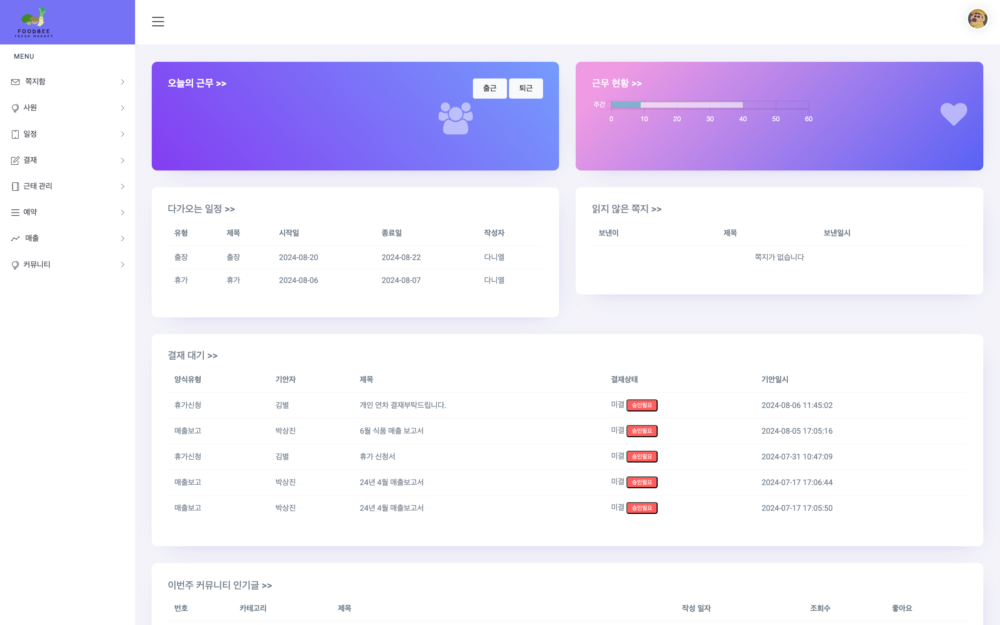

파이널 프로젝트 2024.06.24 ~ 2024.08.05
그룹웨어 인트라넷 FoodBee

Keyword
# Spring boot # Session
# Interceptor # JAVA # JQuery # AJax # MyBatis
개발 인원 : 4명
기업에서 온 멘토님과 함께한 파이널 팀 프로젝트입니다.
Function
온라인 식품 마켓 인트라넷을 구현하였습니다.
사원 초대 및 등록, 로그인 로그아웃, 일정 관리, 회의실 예약, 사원 마이페이지 조회 및 수정,
전자결재, 매출 그래프 조회, 쪽지함, 커뮤니티 등이 있습니다.
다음 주소 API를 활용하여 사원 인트라넷 등록/마이페이지에서 주소를 입력할수 있게 하였고
FullCalendar를 사용해서 일정 캘린더를 구현했습니다.
담당 업무
[신규 사원등록]
- 기존 인사팀이 사원 초대 후 사원의 메일로 받은 링크를 통한 사원등록 구현
- Spring Validation을 사용하여 등록시 입력되는 사원 개인정보 검증, 포워딩 시 입력값 유지
- 파라미터로 들어온 사원번호를 중복검사 하여 이미 등록된 사번은 신규등록이 불가하도록 방지
[쪽지함]
- 받은 쪽지함/보낸 쪽지함에서 읽음/안 읽음 값에 따라 카테고리 탭으로 분기
- 새 쪽지 작성시에 사원리스트 모달에서 사원선택 가능(복수선택 가능)
- 휴지통에서 쪽지함으로 복구 또는 영구삭제 가능
- Spring Scheduler 를 사용해 휴지통 이동 일시에서 15일이 지난 쪽지들은 자동삭제되도록 구현
- 쪽지 상세보기에서 첨부파일 다운로드 구현
[사내 익명게시판]
- 게시판 리스트에서 잡담/회사이야기/질문 으로 카테고리 탭 분기
- 카테고리별로 키워드를 입력하여 제목명으로 검색 가능
- 게시글 상세보기에서 댓글 등록/조회/삭제 가능
- 글/댓글 작성자 본인 삭제일 경우 작성 시에 입력한 비밀번호 검증을 통해 삭제 진행
- 관리자 권한으로 접근 시 관리자 삭제 버튼 생성.관리자는 삭제 사유를 입력하여 글/댓글 삭제 가능.
관리자 권한으로 삭제된 글/
댓글은 “관리자에 의해 삭제된 글/댓글입니다” 문구로 표시
[결재 기안서 작성]
- 기본기안서, 매출보고서, 휴가신청서, 출장신청서, 지출결의서 총 5개의 기안서 작성폼 구현
- 기안 작성 시 모달로 띄워진 사원리스트에서 중간결재자/최종결재자/수신참조자 선택가능
- 기안서 작성 전 기안자의 결재사인 등록 여부에 따라 분기.
사인이 없을 경우 기안서 작성은 불가하고 마이페이지로 리다이렉트
되어 결재 사인 등록 가능
Development Environment
Language: Java17, HTML5, CSS3,JavaScript, SQL
Framework: SpringBoot, MyBatis, BootStrap
Library: JSTL, JQuery, Lombok
API: FullCalendar API, Daum Postcode API, Canvas API
Database: MariaDB
WAS: Tomcat 10.1
OS: Windows, Mac OS
Tools: STS4, HeidiSQL, Sequel Ace, Github
Service Environment
OS: Ubuntu
(20.04)
Platform : AWS Lightsail